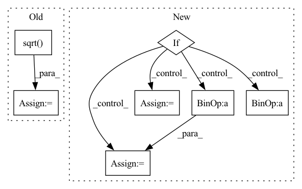

Pattern ID :29457
Before Change
// this work at inference?
x = x.sub(self.running_mean.reshape(shape=[1, -1, 1, 1]))
x = x.mul(self.weight.reshape(shape=[1, -1, 1, 1]))
x = x.div(self.running_var.add(self.eps).reshape(shape=[1, -1, 1, 1]).sqrt() )
x = x.add(self.bias.reshape(shape=[1, -1, 1, 1]))
return x
After Change
y = (x - batch_mean.reshape(shape=[1, -1, 1, 1]))
batch_var = (y*y).mean(axis=(0,2,3))
if self.track_running_stats:
self.running_mean = (1 - self.momentum) * self.running_mean + self.momentum * batch_mean
self.running_var = (1 - self.momentum) * self.running_var + self.momentum * batch_var
self.num_batches_tracked += 1
if self.training:
return self.normalize(x, batch_mean, batch_var)In pattern: SUPERPATTERN
Frequency: 3
Non-data size: 7
Instances Fragment ID: 87399861
Project Name: geohot/tinygrad
Commit Name: ffb96b2d0b5f34a0acb63af0312871fd532138f4
Time: 2020-12-09
Author: geohot@gmail.com
File Name: tinygrad/nn.py
M Class Name: BatchNorm2D
N Class Name: BatchNorm2D
M Method Name: __call__(2)
N Method Name: __call__(2)
M Parent Class:
N Parent Class:
M File Name: tinygrad/nn.py
N File Name: tinygrad/nn.py
M Start Line: 21
M End Line: 25
N Start Line: 18
N End Line: 31
Before Change
if group["weight_decay"] != 0:
adam_step.add_(group["weight_decay"], p.data)
adam_norm = adam_step.pow(2).sum().sqrt()
if weight_norm == 0 or adam_norm == 0:
trust_ratio = 1
else:
trust_ratio = weight_norm / adam_normAfter Change
exp_avg_sq.mul_(beta2).addcmul_(1 - beta2, grad, grad)
// Paper v3 does not use debiasing.
if self.debias:
bias_correction = math.sqrt(1 - beta2 ** state["step"])
bias_correction /= (1 - beta1 ** state["step"])
else:
bias_correction = 1
// Apply bias to lr to avoid broadcast.
step_size = group["lr"] * bias_correction Fragment ID: 87400060
Project Name: jettify/pytorch-optimizer
Commit Name: 33910567d52dfd8ccfe4723eeeb3475f9ac1b1ad
Time: 2020-03-03
Author: tkoncrypto@gmail.com
File Name: torch_optimizer/lamb.py
M Class Name: Lamb
N Class Name: Lamb
M Method Name: step(2)
N Method Name: step(2)
M Parent Class: Optimizer
N Parent Class: Optimizer
M File Name: torch_optimizer/lamb.py
N File Name: torch_optimizer/lamb.py
M Start Line: 72
M End Line: 119
N Start Line: 82
N End Line: 131
Before Change
self.bb = self.add_weight(name="positional_embedding", shape=(kk_blocks, num_heads), initializer="zeros", trainable=True)
strides = int(tf.math.ceil(tf.math.sqrt(float(kk_blocks / qq_blocks))))
q_blocks_h = q_blocks_w = int(tf.math.sqrt(float(qq_blocks)))
k_blocks_h = k_blocks_w = int(tf.math.sqrt( float(kk_blocks)) )
x1, y1 = tf.meshgrid(range(q_blocks_h), range(q_blocks_w))
x2, y2 = tf.meshgrid(range(k_blocks_h), range(k_blocks_w))After Change
q_blocks_h, q_blocks_w = self.query_height, int(qq_blocks / self.query_height)
strides = int(tf.math.ceil(tf.math.sqrt(float(kk_blocks / qq_blocks))))
if self.key_height == -1:
k_blocks_h = q_blocks_h * strides
while kk_blocks % k_blocks_h != 0:
k_blocks_h -= 1
k_blocks_w = int(kk_blocks / k_blocks_h)
else:
k_blocks_h, k_blocks_w = self.key_height, int(kk_blocks / self.key_height)
self.k_blocks_h, self.k_blocks_w = k_blocks_h, k_blocks_w
// print(f"{q_blocks_h = }, {q_blocks_w = }, {k_blocks_h = }, {k_blocks_w = }, {strides = }")
Fragment ID: 87400088
Project Name: leondgarse/keras_cv_attention_models
Commit Name: 4b675139fef68fbaf97bd575c11ea1736ee6de94
Time: 2022-07-22
Author: leondgarse@gmail.com
File Name: keras_cv_attention_models/levit/levit.py
M Class Name: MultiHeadPositionalEmbedding
N Class Name: MultiHeadPositionalEmbedding
M Method Name: build(2)
N Method Name: build(2)
M Parent Class: keras.layers.Layer
N Parent Class: keras.layers.Layer
M File Name: keras_cv_attention_models/levit/levit.py
N File Name: keras_cv_attention_models/levit/levit.py
M Start Line: 26
M End Line: 27
N Start Line: 27
N End Line: 40